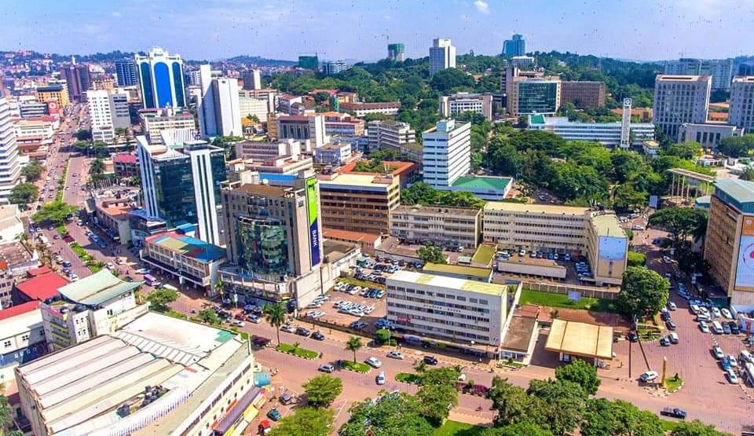
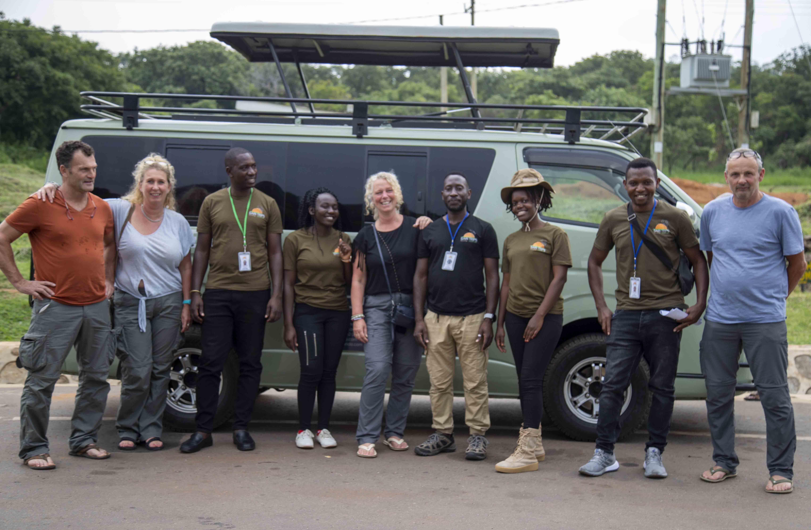
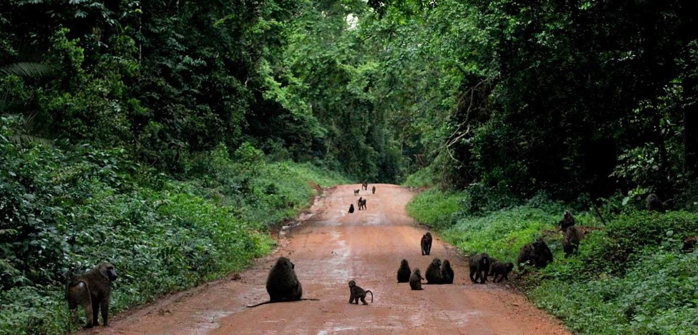
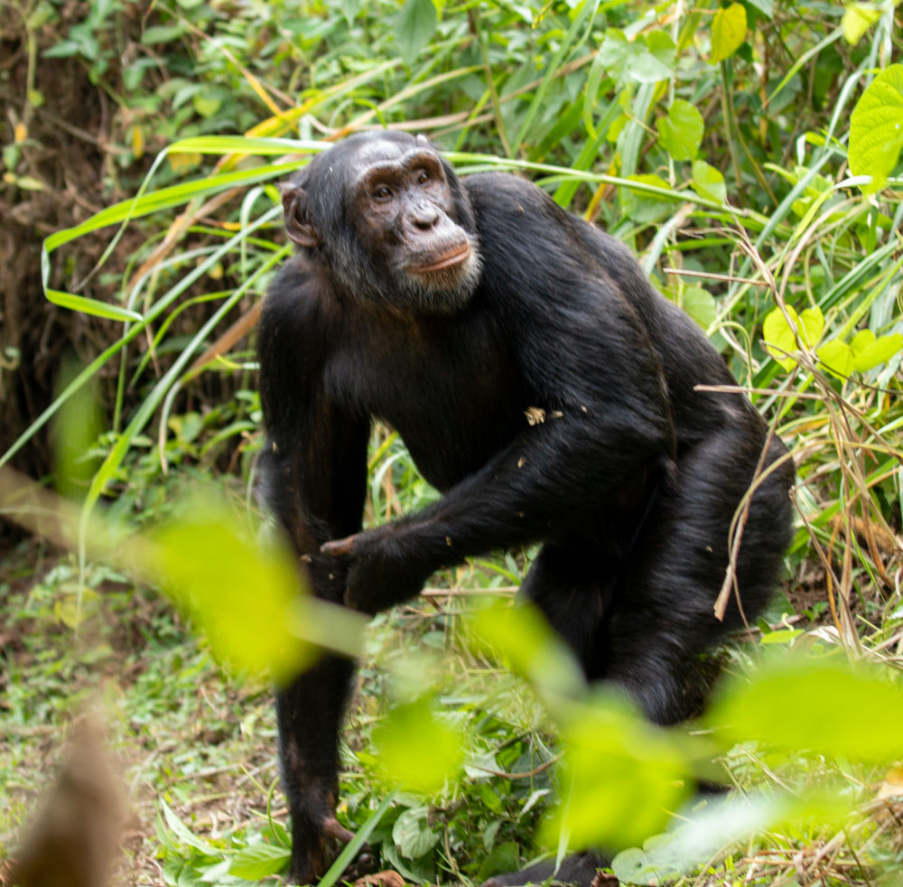
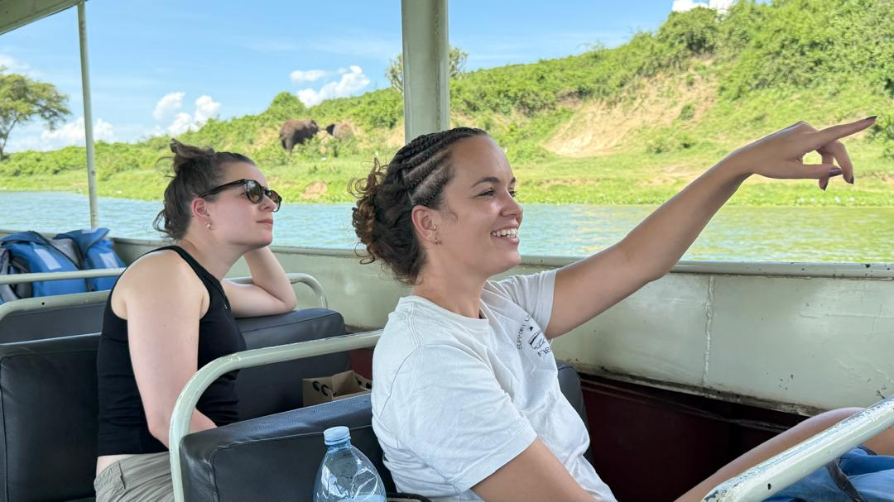
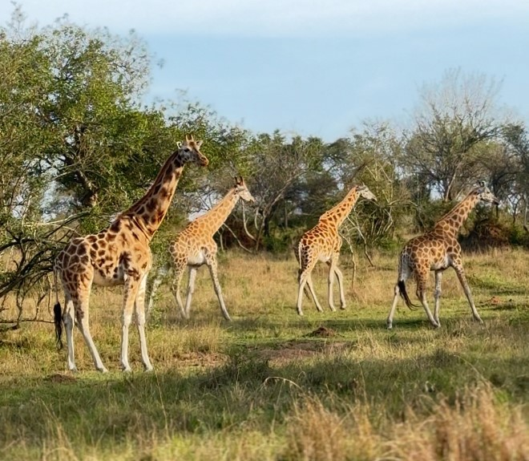
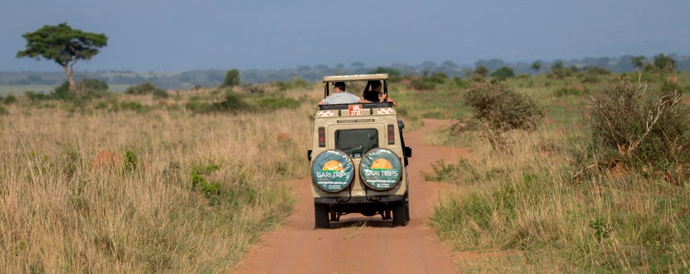
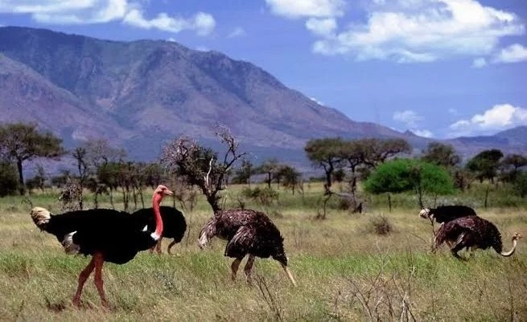
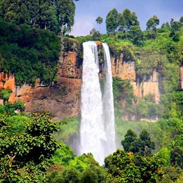
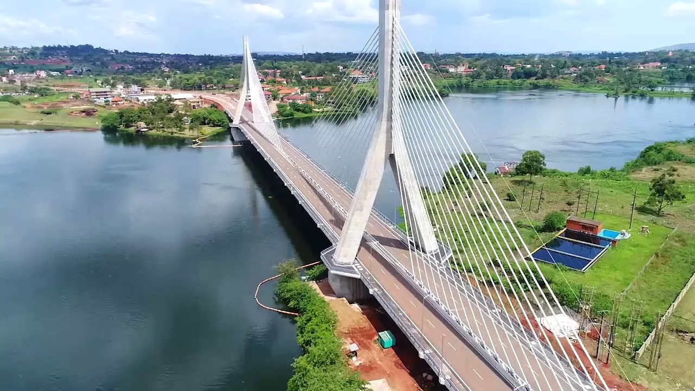

17-Day Adventure Safari — Uganda
Overview
Embark on a transformative 17-day journey through the heart of Uganda—a land of misty rainforests, thundering
waterfalls, remote savannahs, and vibrant cultures. This immersive adventure begins in bustling Kampala and
winds through coffee-covered hills, chimpanzee-rich Kibale Forest, and the mighty Murchison Falls before
venturing deep into the rugged beauty of Kidepo Valley—the most remote and untouched park in Uganda.
Experience authentic cultural encounters with Karamojong pastoralists, learn traditional recipes in
a “Cook with Mama” session near Sipi Falls, and unwind on the banks of the Nile in Jinja. Perfect for
curious travelers seeking more than just wildlife, this itinerary blends gorilla country’s wild wonders
with off-the-beaten-path exploration, community engagement, and East Africa’s raw, untamed spirit.

Day 1
Arrival in Entebbe – Transfer to Kampala
Arrive at Entebbe International Airport, meet your guide and transfer to Banda Inns in Kampala for
check-in, dinner, and overnight.

Day 2
Kampala – Church Visit & City Leisure.
After breakfast, attend a church service in Kampala. Later, have lunch in one of the city’s cozy restaurants
and enjoy an afternoon at leisure—optional city tour or visit to local craft markets. Return to Banda Inns
for dinner and overnight.

Day 3
Kampala → Masaka (Coffee farm visit).
After breakfast depart Entebbe and drive to Masaka region a quick stop at the Equator for photos. En route/at
destination visit local coffee farms to learn about planting, harvesting and processing. Overnight at Villa
Katwe Guest House in Masaka (dinner & overnight). (Approx. driving time: 3–4 hours depending on traffic.)

Day 4
Masaka → Kibale Forest National Park.
After breakfast transfer to Kibale Forest National Park. Check in at Turaco Treetops, have lunch, then
in the afternoon do the Bigodi Swamp Nature Walk and a community visit (Birds & Primates, handicrafts,
local Beer). Dinner and overnight at Turaco Treetops.

Day 5
Kibale — Chimpanzee Tracking.
Early breakfast and depart for chimpanzee tracking in Kibale Forest (morning track). Return to the lodge
for lunch and relaxation or Swimming. Dinner and overnight at Turaco Treetops. (Note: chimp permits
required — we recommend booking these well in advance.)

Day 6
Crater & Tea-farm Exploration → Fort Portal area.
After breakfast check out and explore local crater lakes and tea plantations in the region (scenic drives,
photo stops, small walks). Continue to Mountains of the Moon Hotel (Fort Portal area) for dinner and
overnight. Evening walk or Bar visit optional.
.jpg)
Day 7
Fort Portal → Murchison Falls National Park (via Masindi stop).
Check out after breakfast and drive to Murchison Falls National Park. Stop at New Court View Hotel Masindi
for lunch, then proceed into the park. Hike to the top of Murchison Falls late afternoon to see the
spectacular viewpoint. Dinner and overnight at Pakuba Safari Lodge.

Day 8
Murchison Falls — Game Drive & Boat Trip.
Early morning game drive in Murchison Falls NP, return for lunch, then afternoon boat trip up the Nile to
the base of the falls to view hippos, crocodiles and riverine birdlife. Evening game drive option and
overnight at Pakuba Safari Lodge.

Day 9
Murchison → Gulu.
After breakfast transfer north to Gulu City. Check in at African Roots for lunch, then short city
orientation or market visit. Dinner and overnight in Gulu.

Day 10
Gulu → Kidepo Valley NP (to Savannah Lodge).
Drive from Gulu to Kidepo Valley National Park. Check in at Kidepo Savannah Lodge for lunch. In the late
afternoon enjoy an evening game drive in Kidepo followed by dinner and overnight at the lodge.

Day 11
Kidepo — Morning Game Drive & Sundowner.
Morning game drive in Kidepo Valley NP (excellent for plains game and predators). Return for lunch and
relaxation, then evening sundowner and dinner at Kidepo Savannah Lodge.

Day 12
Kidepo → Moroto (via Nakapelimoru Village).
Checkout with packed lunch and drive toward Karamoja / Moroto region. Stop at Nakapelimoru Village
(Kotido District) — the largest Manyatta in the area — for cultural visit and photos. Continue to
Kara-Tunga (Moroto) arriving in the evening for dinner and overnight.
.jpg)
Day 13
Moroto — Village Visit & Cultural Immersion.
Full day based in Moroto town. Visit a local village in the afternoon, meet community members, learn about
pastoralist life and local crafts. Lunch, dinner and overnight at Kara-Tunga.
.jpg)
Day 14
Moroto → Sipi Falls (Kapchorwa) — Cook with Mama.
With packed lunch depart Moroto and transfer to Sipi Falls, Kapchorwa. Arrive in the afternoon and visit
a local community; participate in the “Cook with Mama” activity—learning local recipes—then end the
evening with storytelling around the campfire. Dinner and overnight at Home of Friends (or similar
community-run accommodation).

Day 15
Hike Sipi Falls → Transfer to Jinja.
Morning hike to the Sipi Falls (scenic viewpoints, waterfall pools). After the hike transfer to Jinja and
check in at Haven Eco River Lodge for relaxation, dinner and overnight.

Day 16
Jinja — Relaxation Day.
A relaxed day at Haven Eco River Lodge — optional activities: boat rides on the Nile, Water Rafting,
visit to the Source of the Nile, community visits, or simply enjoy the lodge and river views. Dinner
and overnight at Haven Eco River Lodge.

Day 17
Jinja → Entebbe Airport — Departure.
After breakfast transfer back to Entebbe Airport for your international flight home.
End of safari.
Things to pack when coming for Safari.
- Waterproof Hiking Shoes.
- Long cotton socks.
- Face masks.
- Gardening gloves.
- Long-sleeved Shirts & Sunscreen.
- A Hat & a Rain jacket.
- Light backpack & Insect repellents.
- A Camera & a Pair of Binoculars.
- Drinking water bottle and Energy giving snacks.
Inclusions
- A professional driver/guide
- All transportation (Unless labeled as optional)
- All Taxes/VAT.
- Meals (As specified in the day-by-day section).
- Those searching for photographic safaris in Uganda.
Exclusions
- International flights (From/to home).
- Additional accommodation before and at the end of the tour.
- Tips (Tipping guideline US$10.00 pp per day).
- Personal items (Souvenirs, travel insurance, visa fees, etc.).
- Government imposed increase of taxes and/or park fees.